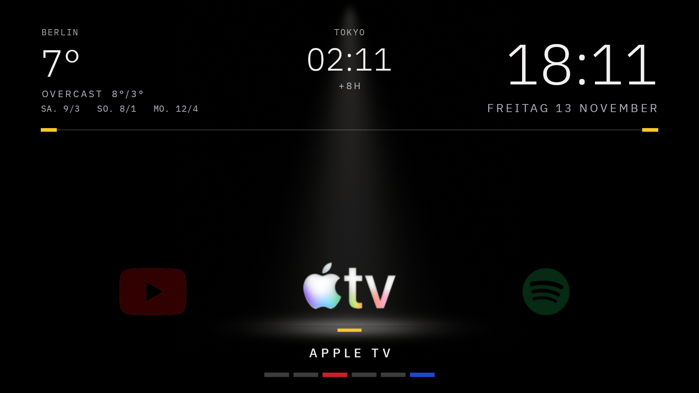

A quiet home screen for your TV.
Black room, one spotlight, glass app icons. No ads, no recommendations, no tracking.

What it is
Less than a launcher usually does.
- Only your appsYou pick the list. No sponsored rows, no content feed.
- Glass icons, one spotlightThe focused app is lit, the others sink into the dark.
- Quiet widgetsClock, extra time zones, weather with a short forecast.
- One JSON fileApps and widgets are configured in
config.json. - Private by defaultNo network access unless you add a weather widget. No SDKs.
- Small and hackablePlain Android Views, no dependencies. Easy for Claude to change.
Install
Five minutes, over Wi-Fi.
- Enable debugging on the TV. Settings → Device Preferences → About → tap Build seven times. Then Developer options → USB debugging on.
- Find the TV's IP in Settings → Network or your router's device list. Install
adbon your computer (sudo apt install android-tools-adb, or platform-tools). - Download the APK from the latest release and clone the repo for the scripts:
git clone https://github.com/oliverweissl/RietveldTV.git && cd RietveldTV
- Install and make it the home screen:
scripts/install.sh 192.168.1.50 RietveldTV.apk
Accept "Allow debugging?" on the TV, then press Home on the remote. - Home still opens the old launcher? See troubleshooting.
scripts/restore.sh <tv-ip>undoes everything.
Configure
Apps and widgets in one file.
{
"apps": ["com.netflix.ninja", "com.google.android.youtube.tv", "com.spotify.tv.android"],
"showSettings": true,
"widgets": [
{ "type": "weather", "city": "Berlin", "position": "top-left", "days": 3 },
{ "type": "clock", "label": "Tokyo", "timezone": "Asia/Tokyo", "position": "top-center" },
{ "type": "clock", "position": "top-right" }
]
}
scripts/push-config.sh 192.168.1.50 config.json
| Widget | Options |
|---|---|
clock | label, timezone (e.g. Asia/Tokyo, omit for local), size (l/m), hour24, date |
weather | city (or latitude + longitude), name, units, days. Data from Open-Meteo (no key). Only the city or coordinates you set are sent. |
Every widget takes a position: top-right (default), top-center, top-left, bottom-left or bottom-right.
Find a package name: adb shell pm list packages | grep -i netflix.
Customise with Claude
Describe it. Claude edits it. Claude looks at your TV.
You do not need to know Android. Open the project in Claude Code, keep the TV connected over adb, and describe the change. The repo's CLAUDE.md tells Claude how to build, install and take a screenshot to check its own work.
git clone https://github.com/oliverweissl/RietveldTV.git cd RietveldTV claude
Change what is shown (config only):
Change how it looks (a few lines of Java):
Add a widget:
Tips: give a reference ("like Apple's Liquid Glass", a website URL) and a feeling ("calmer", "more modernist"), not pixel values. Change one thing at a time and commit when you like it. If Claude cannot see a reference image, save it to a file and give it the path.